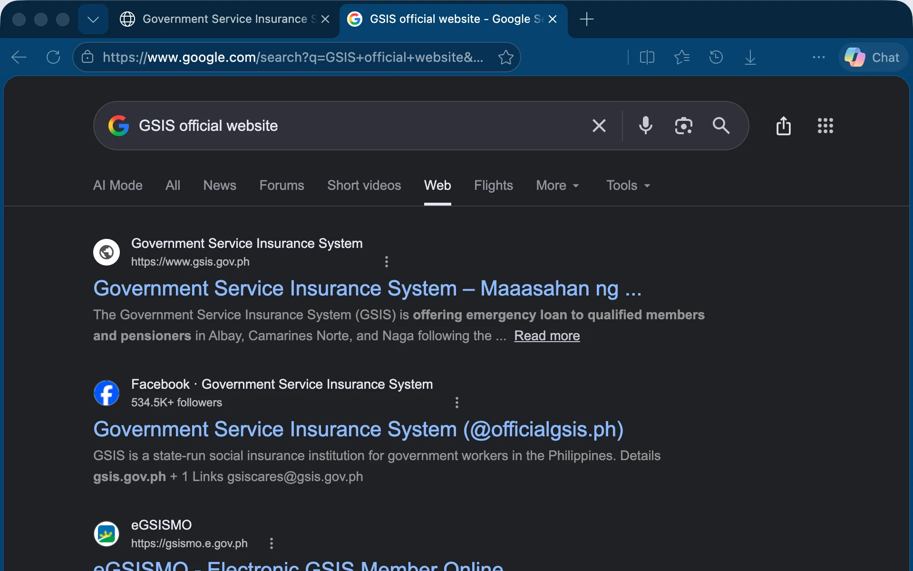
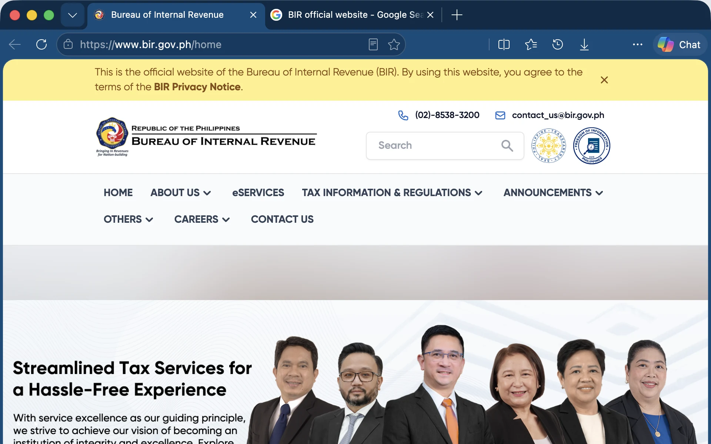
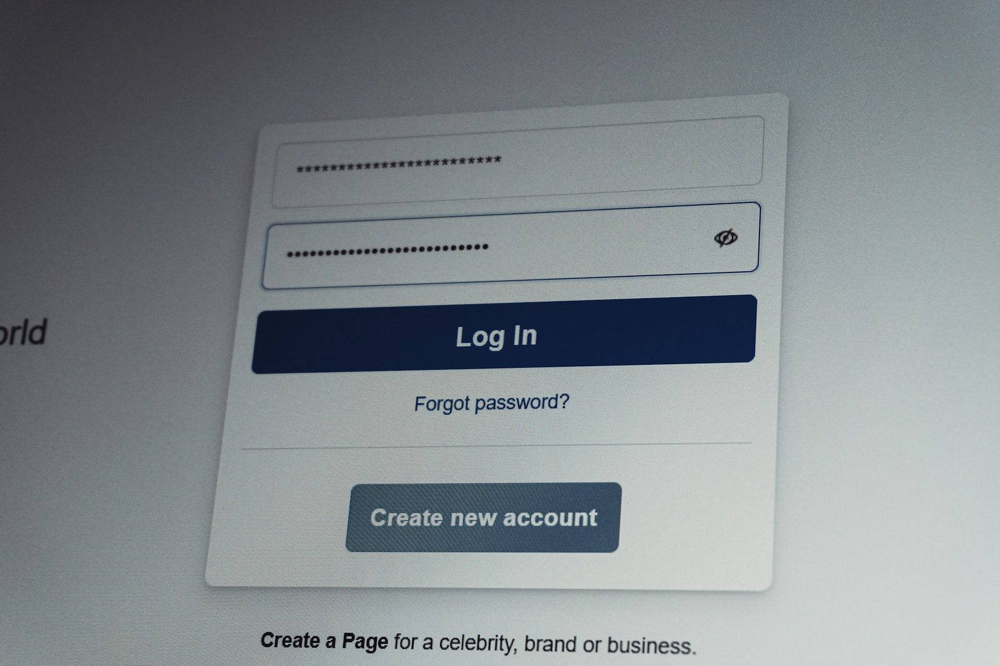
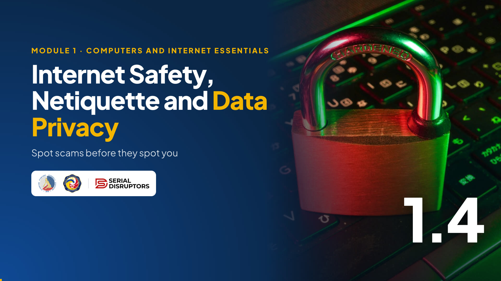

Module 1 · Computers and Internet Essentials
Internet Safety, Netiquette and Data Privacy
Spot scams before they spot you, protect your accounts, communicate politely, and keep taxpayer data safe.
This topic matters at the office and at home. Scammers today don't break in through the computer; they trick the person. That's peopleware again, from 1.1.
We'll cover phishing and its cousins, red flags, passwords and two-step login, daily safety habits, netiquette in email and group chats, and the Data Privacy Act. And we'll end with exactly what to do if you or a family member gets scammed. About 15 minutes.
Warm-up · react or type in the chat
Have you received a text like this?
Read the text aloud in a dramatic voice. Ask for reactions: , or .
Expect many thumbs up; fake "refund", "parcel" and "GCash reward" texts are everywhere. Emphasize: this is a made-up sample, but real scams like it use the names of government agencies, including BIR, because people trust them. Ask: "What made you suspicious?" Collect answers; we'll formalize them as red flags in two slides.
In this topic
By the end, you can…
Recognize scams
Phishing, smishing and vishing, including fakes that use a government agency's name.
Secure your accounts
Passphrases, two-step login, updates, safe Wi-Fi, screen lock and a clean desk.
Act responsibly online
Good netiquette, the basics of the Data Privacy Act, and what to do if something goes wrong.
Three goals: spot, protect, respect.
Point out that as BIR personnel, you are a bigger target than most: you handle taxpayer information, and scammers know the public trusts the BIR name. So these habits protect you, your family, the office, and every taxpayer whose records pass through your hands. Ask if anyone has a recent scam story they're willing to share at the end.
Think "fishing" · bait, hook, catch
One trick, three channels
Phishing · email
A fake email with a link or attachment. "Your account will be suspended, log in here."
Gov't fake: a "tax refund" email asking you to log in on a lookalike site.
Smishing · SMS and chat
Texts or Messenger/Viber messages with a short link. "Your parcel is on hold, pay ₱99."
Gov't fake: "BIR notice: claim your refund today" with a bit.ly link.
Vishing · voice call
A caller pretends to be from a bank, a courier or an agency and asks for your OTP or a payment.
Gov't fake: "You have a tax case. Settle it now through GCash."
Explain the name: phishing sounds like fishing. They throw bait (a refund, a prize, or a scary penalty), attach a hook (a link or file), and wait for a catch.
Smishing is the SMS version; vishing is by voice. Stress the government fakes: scammers use the BIR name because people fear tax problems. Real government offices don't ask you to settle anything through a personal e-wallet over the phone. When in doubt, contact the office through its official website or hotline, never the number in the message.
Activity · in the portal
How many red flags can you spot?
Dear Taxpayer,
You have an unclaimed refund of P8,450.00. Verify your account within 24 hours or it will be forfieted. Enter your TIN, email password and the OTP we send.
Claim Refundhttp://bir-gov-ph.help-desk.site/verifyType the number you found, then one flag you're sure about.
- Sender's domain is help-desk.site, not bir.gov.ph
- Urgency and ALL CAPS: "24 hours", "CANCELLED"
- Generic "Dear Taxpayer" and a misspelling
- Asks for your password and OTP
- The link goes to a lookalike site
- An attachment ending in .exe
Click the timer for 2 minutes. Ask them to type how many red flags they find, then one specific flag.
Reveal the list and walk through it. There are at least six, more depending on how you count them, and the portal accepts any count from 6 to 12: fake sender domain, urgency, generic greeting and the misspelling "forfieted", a request for password and OTP, a link that shows a different address when you hover, and a .exe file pretending to be a PDF. Teach the habit: hover before you click, and when in doubt, type the official address yourself.
Myth or fact? · click each card to flip
What do you believe about online safety?
Myth or fact?
"The padlock in the address bar means the site is safe."
click to flipMYTH
The padlock only means the connection is private. Many scam sites have one. Check the domain.
click to flip backMyth or fact?
"Hackers only go after big companies, not ordinary employees."
click to flipMYTH
Ordinary people are the easiest way in. One stolen office login can open a whole network.
click to flip backMyth or fact?
"A long passphrase is stronger than a short, complicated password."
click to flipFACT
Length matters most. Four random words are harder to crack, and easier to remember.
click to flip backMyth or fact?
"It's okay to give your OTP if the caller says they're from your bank."
click to flipMYTH
Never share an OTP with anyone. It's the key to your account, and real staff don't need it.
click to flip backFor each card, read the statement and ask them to type M for myth or F for fact in the chat. Then click to flip.
Three myths, one fact. The OTP card is the most important: banks and e-wallets repeat it constantly, yet people still get tricked because the caller sounds official and knows some of their details. The rule is simple: an OTP is for you to type, never to say.
Check before you click · in the real browser
Read the address, not just the lock
 Edge shown · Chrome is similar
Edge shown · Chrome is similar


Microsoft Edge (Mac shown, live pages on 4 Nov 2026). Edge on Windows looks the same. Chrome shows a small settings icon where Edge shows the lock.
- Find the site yourself. Search the agency's name and pick the result whose address ends in .gov.ph. Don't use a link from a text or email.
- The lock only means the connection is private. Scam sites have one too. Click it and you see "Connection is secure", not "this site is honest".
- The domain is the part that counts. Edge shows it brighter: www.bir.gov.ph. The fake in our sample email, bir-gov-ph.help-desk.site, ends in something else: whatever the words in front say, that site belongs to help-desk.site.
This follows the padlock myth. Walk the three frames with the arrow key. Frame 1: we found BIR's site by searching, not by clicking a link in a message. The address under the result ends in .gov.ph.
Frame 2: the lock. It means nobody can read the data on the way, but anyone can get a lock for a scam site in minutes. Frame 3: the domain. Edge shows it in brighter text than the rest. Compare it with the sample phishing email, where the real domain was help-desk.site.
If you demo live, open a fresh window with only a public site, so no personal tabs or bookmarks show.
Protect your accounts
A strong lock, plus a second lock
1 · Use a passphrase
Mangga-Jeepney-Ulan-Bangka
Sample only. Make your own, at least 15 characters.
- A different one for each important account.
- No birthdays, names or your TIN.
2 · Turn on multi-factor authentication (MFA)
After the password, prove it's you with a code on your phone, an authenticator app or a fingerprint. A stolen password alone is no longer enough.

A passphrase is a few random words joined together. It's long, so it's hard to guess, and it's easy to remember. Never use the sample on screen. Never reuse your email password anywhere else, because one leak then opens everything.
MFA, sometimes called 2-step verification, is the second lock. Ask: "Who has turned it on for Facebook or email?" Encourage everyone to do it tonight for email, Facebook and their e-wallet.
Daily habits
Six habits that block most attacks
Install updates
Updates fix security holes. Restart when Windows or your phone asks; don't keep postponing.
Careful on public Wi-Fi
Mall or café Wi-Fi: no banking or office logins. Use mobile data instead.
Lock before you leave
Press Win + L every time you stand up, even for a quick coffee.
Clean desk
No passwords on sticky notes. Keep taxpayer folders and printouts out of sight; lock drawers.
No unknown USBs
A flash drive you found or were handed by a stranger can carry malware. Give it to IT.
Back up
Keep copies of important files on the office's approved drive, so a broken PC isn't a disaster.
These six habits stop most everyday attacks. Demo Win+L right now and ask everyone to try it, then log back in.
Clean desk is a privacy habit too: a taxpayer at the counter can read a screen or a folder left open. For public Wi-Fi, the simple rule is no banking and no office logins. For backups, follow your office's approved storage; don't copy taxpayer files to personal accounts or personal flash drives.
Netiquette · good manners online
Office email and group chats
- Clear subject line and a greeting.
- Reply to the sender; Reply All only if everyone needs it.
- Check before forwarding: is it true, and is it okay to share?
- Respect work hours; non-urgent messages can wait for morning.
- WRITING IN ALL CAPS. It reads as shouting.
- Taxpayer names, TINs or documents in a group chat.
- Arguing or scolding someone in the GC.
- Forwarding chain messages and "viral" warnings.
Netiquette is just good manners, online. Ask: "What's your biggest group chat pet peeve?" Expect: Reply All storms, ALL CAPS, messages at 11 PM, and forwarded chain messages.
Two serious points: never post taxpayer information in a group chat, even an office one, because screenshots travel. And disagreements are better handled in a private message or a call. Many email apps can schedule a message to send in the morning.
Watch · about 5 minutes
Spot scams, protect accounts, guard taxpayer data
A fake refund text, a phishing email and a caller who says he's from BIR: learn to spot scams, lock your accounts, mind your netiquette and follow the Data Privacy Act.

5:16Introduce the video in one or two sentences, then read the While watching task aloud so everyone knows what to look for.
Press → to open the video full screen. In Zoom or Meet, share this tab with computer sound turned on.
Space or K plays and pauses (or click the video). C turns captions on or off; the speed button offers 1.25× and 0.85×. The arrows still move between slides, and the video pauses when you leave this slide.
Length 5:16. Pause anywhere to take a question; captions stay on screen for anyone without sound.
After the video, go back to the While watching task: ask two or three people for their answers.
Privacy in practice
Guard data like it's your own
- Verify identity before giving any taxpayer information by phone or chat.
- Use official email and approved drives, never personal accounts.
- No selfies or posts that show your screen, files or the records room.
- Shred or properly dispose of printouts with personal data.
- Don't post your kids' school ID, full birthday or home address.
- Never share your GCash or bank OTP, MPIN or QR screenshots.
- Check app permissions: does a flashlight app need your contacts?
- Teach the family the "stop, check, ask" rule for odd messages.
Same principle in two places: only share what's needed, only with the right person.
Office: a caller says they're the taxpayer's relative and asks for their balance. Do we answer? No, we follow the office's verification procedure. Home: the first-day-of-school photo showing the full school ID is a gift to scammers. Ask: "Who has posted a photo like that?" Encourage them to talk with their kids and parents, who are often targeted too.
If it happens · act fast, no shame
Hacked or scammed? Do this.
- Stop. Don't send more money, codes or replies. Disconnect a device that's acting strangely.
- Office device or account? Report to your IT or ICT focal person right away.
- Change passwords from a safe device, starting with email. Turn on MFA.
- Money involved? Call your bank or e-wallet through its official hotline to freeze the account.
- Keep evidence: screenshots, numbers, links, reference numbers.
- Report to the CICC hotline 1326, and warn your contacts.
1326
CICC Inter-Agency Response Center
Cybercrime Investigation and Coordinating Center. Save it in your phone today.
Anyone can be fooled, including IT people. What matters is acting fast. Walk through the six steps.
Stress step 2: if it involves an office PC or account, tell IT immediately, because one compromised account can affect the whole office. Ask everyone to save 1326 in their phones now; it's the CICC's hotline for reporting scams and cybercrime. Cybercrime itself is covered by the Cybercrime Prevention Act of 2012, RA 10175.
Quick check · click an answer
A caller says: "This is BIR. You have a pending tax case. Pay ₱5,000 by GCash today to settle it." Best move?
Let them answer in the chat first, then click the options. The answer is C.
This scenario is realistic: scammers pretend to be from government agencies, BIR included, because people fear penalties. The pattern to remember is urgency + pay now + personal e-wallet. Verify using contact details you find yourself on the official website, never the number the caller gives you. As BIR staff, you can also help family and taxpayers recognize this scam.
Recap · Topic 1.4
Stop, check, then click. And guard every record.
Spot
Urgency, odd links, requests for OTPs or payment: phishing, smishing, vishing.
Protect
Passphrase + MFA, updates, Win+L, clean desk, no unknown USBs.
Respect
Good netiquette, RA 10173, taxpayer data stays confidential. Report to IT and 1326.
Next · 1.5 Everyday AI: what AI really is, where you already use it, and how to use it safely.
Summarize: spot, protect, respect. Ask each person to commit to one action today in the chat: turn on MFA, save 1326, or start locking their PC with Win+L.
Bridge to 1.5: "Last topic for Module 1: artificial intelligence. You already use it daily. We'll learn what it is, what it isn't, and the one rule that connects to today: never paste confidential data into a public AI tool."